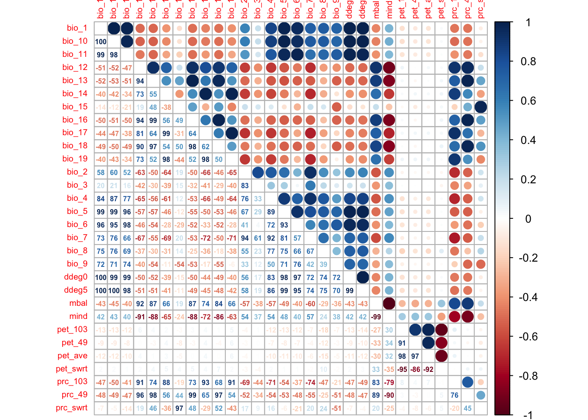

Introduction to SDMs: data preparation and simple model fitting
1 Introduction
This session will introduce you to simple species distribution models (SDMs). Species distribution models (SDMs) are a popular tool in quantitative ecology (Franklin 2010; Peterson et al. 2011; Guisan, Thuiller, and Zimmermann 2017) and constitute the most widely used modelling framework in global change impact assessments for projecting potential future range shifts of species (IPBES 2016). There are several reasons that make them so popular: they are comparably easy to use because many software packages (e.g. Thuiller et al. 2009; Phillips, Anderson, and Schapire 2006) and guidelines (e.g. Elith, Leathwick, and Hastie 2008; Elith et al. 2011; Merow, Smith, and Silander Jr 2013; Guisan, Thuiller, and Zimmermann 2017) are available, and they have comparably low data requirements.
SDMs relate biodiversity observations (e.g. presence-only, presence/absence, abundance, species richness) at specific sites to the prevailing environmental conditions at those sites. Different statistical and machine-learning algorithms are available for this. Based on the estimated biodiversity-environment relationship, we can make predictions in space and in time by projecting the model onto available environmental layers (Figure 1).
![**Figure 1. Schematic representation of the species distribution modelling concept. First, biodiversity and environmental information are sampled in geographic space. Second, a statistical model (here, generalised linear model) is used to estimate the species-environment relationship. Third, the species–environment relationship can be mapped onto geographic layers of environmental information to delineate the potential distribution of the species. Mapping to the sampling area and period is usually referred to as interpolation, while transferring to a different time period or geographic area is referred to as extrapolation.**](figures/sdm.png)
Figure 1. Schematic representation of the species distribution modelling concept. First, biodiversity and environmental information are sampled in geographic space. Second, a statistical model (here, generalised linear model) is used to estimate the species-environment relationship. Third, the species–environment relationship can be mapped onto geographic layers of environmental information to delineate the potential distribution of the species. Mapping to the sampling area and period is usually referred to as interpolation, while transferring to a different time period or geographic area is referred to as extrapolation.
We distinguish five main modelling steps for SDMs: (i) conceptualisation, (ii) data preparation, (iii) model fitting, (iv) model assessment, and (v) prediction (Figure 2.). The last step (prediction) is not always part of SDM studies but depends on the model objective. Generally, we distinguish three main objectives for SDMs: (a) inference and explanation, (b) mapping and interpolation, and (c) forecast and transfer. I recommend getting more familiar with critical assumptions and modelling decisions by studying the many excellent review articles (Guisan and Zimmermann 2000; Guisan and Thuiller 2005; Elith and Leathwick 2009) and textbooks on SDMs (Peterson et al. 2011; Franklin 2010; Guisan, Thuiller, and Zimmermann 2017).
I would also like to emphasise that model building is an iterative process and there is much to learn on the way. In consequence, you may want to revisit and improve certain modelling steps, for example improve the spatial sampling design. Because of that I like to regard model building as a cycle rather than a workflow with a pre-defined termination point (Figure 2.).

Figure 2. The main modelling cycle in species distribution modelling.
1.1 Prac overview
For today, we will only work with Generalised Linear Models (GLMs) and concentrate on the first three model building steps (Figure 2.)
1.2 Generalised linear models (GLMs)
Why do we not simply use linear regression to fit our species-environment relationship? Well, strictly, ordinary least squares (OLS) linear regression is only valid if the response (or rather the error) is normally distributed and ranges (\(-\infty,\infty\)). OLS regression looks like this
\[E(Y|X)=\beta X+\epsilon\]
where \(E(Y|X)\) is the conditional mean, meaning the expected value of the response \(Y\) given the environmental predictors \(X\) (Hosmer and Lemeshow 2013). \(X\) is the matrix of predictors (including the intercept), \(\beta\) are the coefficients for the predictors, and \(\epsilon\) is the (normally distributed!) error term. \(\beta X\) is referred to as the linear predictor.
When we want to predict species occurrence based on environment, then the conditional mean \(E(Y|X)\) is binary and bounded between 0 (absence) and 1 (presence). Thus, the assumptions of OLS regression are not met. GLMs are more flexible regression models that allow the response variable to follow other distributions. Similar to OLS regression, we also fit a linear predictor \(\beta X\) and then relate this linear predictor to the mean of the response variable using a link function. The link function is used to transform the response to normality. In case of a binary response, we typically use the logit link (or sometimes the probit link). The conditional mean is then given by:
\[E(Y|X) = \pi (X) = \frac{e^{\beta X+\epsilon}}{1+e^{\beta X+\epsilon}}\]
The logit transformation is defined as: \[g(X) = ln \left( \frac{\pi (X)}{1-\pi (X)} \right) = \beta X+\epsilon\]
The trick is that the logit, g(X), is now linear in its parameters, is continuous and may range (\(-\infty,\infty\)). GLMs with a logit link are also called logistic regression models.
2 Conceptualisation
In the conceptualisation phase, we formulate our main research objectives and decide on the model and study setup based on any previous knowledge on the species and study system. An important point here is whether we can use available data or have to gather own biodiversity (and environmental) data, which would require deciding on an appropriate sampling design. Then, we carefully check the main underlying assumptions of SDMs, for example whether the species is in pseudo-equilibrium with environment and whether the data could be biased in any way (cf. chapter 5 in Guisan, Thuiller, and Zimmermann 2017). The choice of adequate environmental predictors, of modelling algorithms and of desired model complexity should be guided by the research objective and by hypotheses regarding the species-environment relationship. We can divide environmental variables into three types of predictors: resource variables, direct variables and indirect variables (Austin 1980; Guisan and Zimmermann 2000).
2.1 Example: Ring Ouzel
We aim at assessing potential climate change effects on the Ring Ouzel (Turdus torquatus) in Switzerland (Figure @ref(fig:birdfig)), a typical mountain bird in the Alps and Jura mountains. The Swiss Ornithological Institute provides comprehensive information for all birds breeding in Switzerland. Thus, we first have a look at their website to find out more about Ring Ouzel ecology. Think about which factors could limit the distribution of Ring Ouzel in Switzerland.

Figure 3. A male ring ouzel. Copyright Ruedi Aeschlimann. Downloaded from www.vogelwarte.ch.
The Swiss Ornithological Institute has produced two distribution atlasses at 1 km resolution over the last two decades. These data, in particular the breeding bird atlas for 1993-1996 (Schmid et al. 1998) have been used previously. For example, Zurell et al. (2019) have made available the 1993-1996 distribution data of several breeding bird species along with environmental predictor variables, which we can use for our study. The study by Zurell et al. (2019) considered bioclimatic, topographic and remote-sensing based vegetation variables as relevant environmental predictors.
Questions:
- Do you think the Ring Ouzel is/was at equilibrium during the time period when the atlas data were gathered?
- What relationship would you expect between Ring Ouzel occurrence and climate?
- Which of the proposed environmental variables constitute resource, direct and indirect predictors?
3 Data preparation
In this step, the actual biodiversity and environmental data are gathered and processed. This concerns all data that are required for model fitting but also data that are used for making transfers. In session 1, we have explored some ways to retrieve biodiversity data and environmental data, and how these can be joinded. Today, we can skip these steps as the biodiversity and environmental data are available for download from the supplementary material of Zurell et al. (2019), or more specifically from a Dryad repository.
Download the data and unzip it into your data folder. Then, read in the data:
avi_dat <- read.table('data/Data_SwissBreedingBirds.csv', header=T, sep=',')
summary(avi_dat)The data frame contains 2535 records with presence-absence information for 56 bird species, and 52 environmental predictor variables. The Ring Ouzel has a prevalence of ca. 0.25. Part of the data (70%) were used for single species distribution modelling (Zurell et al. 2019) and were already partitioned into spatial blocks in preparation for spatial block cross-validation (Roberts et al. 2017) - we will deal with this in session 4. The remaining 30% of the data were used for testing community level predictions, which is irrelevant for our purpose.
Let’s structure the data frame a little:
# Species names
avi_spp <- names(avi_dat)[1:56]
sp <- "Turdus_torquatus"
# Variable names
all_vars <- names(avi_dat)[57:108]
clim_vars <- names(avi_dat)[69:98]
avi_df <- avi_dat[,c(sp,clim_vars)]
summary(avi_df)## Turdus_torquatus bio_1 bio_10 bio_11
## Min. :0.0000 Min. :-0.5363 Min. : 7.38 Min. :-8.12753
## 1st Qu.:0.0000 1st Qu.: 5.3261 1st Qu.:13.11 1st Qu.:-2.20872
## Median :0.0000 Median : 8.1541 Median :16.34 Median : 0.02445
## Mean :0.2548 Mean : 7.2725 Mean :15.42 Mean :-0.72079
## 3rd Qu.:1.0000 3rd Qu.: 9.4525 3rd Qu.:17.92 3rd Qu.: 0.98350
## Max. :1.0000 Max. :12.8116 Max. :21.62 Max. : 3.98980
## bio_12 bio_13 bio_14 bio_15
## Min. : 606 Min. : 63.0 Min. : 24.00 Min. : 6.881
## 1st Qu.:1112 1st Qu.:118.0 1st Qu.: 64.00 1st Qu.:14.306
## Median :1300 Median :144.0 Median : 75.00 Median :20.643
## Mean :1381 Mean :153.6 Mean : 80.97 Mean :21.497
## 3rd Qu.:1608 3rd Qu.:182.0 3rd Qu.: 95.50 3rd Qu.:27.895
## Max. :2890 Max. :338.0 Max. :177.00 Max. :44.620
## bio_16 bio_17 bio_18 bio_19
## Min. :169.0 Min. : 88 Min. :147.0 Min. : 93.0
## 1st Qu.:338.0 1st Qu.:211 1st Qu.:332.0 1st Qu.:220.0
## Median :413.0 Median :244 Median :405.0 Median :255.0
## Mean :439.5 Mean :265 Mean :429.1 Mean :278.7
## 3rd Qu.:520.0 3rd Qu.:308 3rd Qu.:508.0 3rd Qu.:324.0
## Max. :987.0 Max. :564 Max. :987.0 Max. :613.0
## bio_2 bio_3 bio_4 bio_5
## Min. : 5.592 Min. :26.10 Min. :563.1 Min. :12.23
## 1st Qu.: 7.789 1st Qu.:30.96 1st Qu.:631.8 1st Qu.:18.81
## Median : 8.293 Median :31.68 Median :664.7 Median :22.39
## Mean : 8.243 Mean :31.75 Mean :658.0 Mean :21.42
## 3rd Qu.: 8.689 3rd Qu.:32.47 3rd Qu.:687.1 3rd Qu.:24.29
## Max. :11.471 Max. :36.40 Max. :736.5 Max. :28.27
## bio_6 bio_7 bio_8 bio_9
## Min. :-12.7192 Min. :21.31 Min. :-4.635 Min. :-7.5555
## 1st Qu.: -6.0816 1st Qu.:24.84 1st Qu.:11.318 1st Qu.:-0.6454
## Median : -3.6965 Median :26.21 Median :14.862 Median : 1.6082
## Mean : -4.5000 Mean :25.92 Mean :13.540 Mean : 1.1906
## 3rd Qu.: -2.6218 3rd Qu.:27.03 3rd Qu.:16.777 3rd Qu.: 2.6720
## Max. : -0.5949 Max. :31.51 Max. :20.285 Max. :18.1155
## ddeg0 ddeg5 mbal mind
## Min. : 5138 Min. : 1825 Min. :-967.00 Min. :0.3544
## 1st Qu.:17516 1st Qu.:11251 1st Qu.:-336.00 1st Qu.:0.8645
## Median :29522 Median :18452 Median :-156.00 Median :1.0778
## Mean :27685 Mean :17183 Mean : -58.93 Mean :1.0790
## 3rd Qu.:39335 3rd Qu.:22144 3rd Qu.: 174.00 3rd Qu.:1.2589
## Max. :54022 Max. :37634 Max. :1518.00 Max. :2.4399
## pet_103 pet_49 pet_ave pet_swrt
## Min. :0.7112 Min. :2.202 Min. :1.456 Min. :1.675
## 1st Qu.:1.9632 1st Qu.:5.565 1st Qu.:3.771 1st Qu.:2.530
## Median :2.1279 Median :5.756 Median :3.941 Median :2.734
## Mean :2.1825 Mean :5.691 Mean :3.937 Mean :2.784
## 3rd Qu.:2.4008 3rd Qu.:5.909 3rd Qu.:4.144 3rd Qu.:2.937
## Max. :3.7854 Max. :6.551 Max. :5.060 Max. :5.289
## prc_103 prc_49 prc_swrt
## Min. : 264.8 Min. : 298.1 Min. :0.8483
## 1st Qu.: 474.8 1st Qu.: 618.7 1st Qu.:1.1774
## Median : 548.4 Median : 743.8 Median :1.3490
## Mean : 590.0 Mean : 791.3 Mean :1.3558
## 3rd Qu.: 681.5 3rd Qu.: 930.3 3rd Qu.:1.5353
## Max. :1197.5 Max. :1719.4 Max. :2.1811Last, for many model it is advisable to standardise the predictor variables as this will facilitate model convergence and interpretation.
# Standardise predictors
avi_dfst <- avi_df
avi_dfst[,-1] <- scale(avi_dfst[,-1], center=T, scale=T)4 Model fitting
Model fitting is at the heart of any SDM application. Important aspects to consider during the model fitting step are:
- How to deal with multicollinearity in the environmental data?
- How many variables should be included in the model (without overfitting) and how should we select these?
- Which model settings should be used?
- When multiple model algorithms or candidate models are fitted, how to select the final model or average the models?
- Do we need to test or correct for non-independence in the data (spatial or temporal autocorrelation, nested data)?
- Do we want to threshold the predictions, and which threshold should be used?
More detailed descriptions on these aspects can be found in Franklin (2010) and in Guisan, Thuiller, and Zimmermann (2017).
4.1 Fitting our first GLM
Before we start into the complexities of the different model fitting steps, let us look at a GLM in more detail. We fit our first GLM with only one predictor assuming a linear relationship between response and predictor. The glm function is contained in the R stats package. We need to specify a formula describing how the response should be related to the predictors, and the data specifying the data frame that contains the response and predictor variables, and a family argument specifying the type of response and the link function. In our case, we use the logit link in the binomial family.
# We first fit a GLM for the bio1 variable assuming a linear relationship:
m1 <- glm(Turdus_torquatus ~ bio_1, family="binomial", data= avi_dfst)
# We can get a summary of the model:
summary(m1) ##
## Call:
## glm(formula = Turdus_torquatus ~ bio_1, family = "binomial",
## data = avi_dfst)
##
## Deviance Residuals:
## Min 1Q Median 3Q Max
## -2.8985 -0.3636 -0.2118 0.2204 2.3624
##
## Coefficients:
## Estimate Std. Error z value Pr(>|z|)
## (Intercept) -1.89945 0.08363 -22.71 <2e-16 ***
## bio_1 -2.28932 0.08915 -25.68 <2e-16 ***
## ---
## Signif. codes: 0 '***' 0.001 '**' 0.01 '*' 0.05 '.' 0.1 ' ' 1
##
## (Dispersion parameter for binomial family taken to be 1)
##
## Null deviance: 2877.6 on 2534 degrees of freedom
## Residual deviance: 1484.1 on 2533 degrees of freedom
## AIC: 1488.1
##
## Number of Fisher Scoring iterations: 6We can also fit quadratic or higher polynomial terms (check ?poly) and interactions between predictors:
- the term I()indicates that a variable should be transformed before being used as predictor in the formula
- poly(x,n) creates a polynomial of degree \(n\): \(x + x^2 + ... + x^n\)
- x1:x2 creates a two-way interaction term between variables x1 and x2, the linear terms of x1 and x2 would have to be specified separately
- x1*x2 creates a two-way interaction term between variables x1 and x2 plus their linear terms
- x1*x2*x3 creates the linear terms of the three variables, all possible two-way interactions between these variables and the three-way interaction
# Fit a quadratic relationshop with bio1:
m1_q <- glm(Turdus_torquatus ~ bio_1 + I(bio_1^2), family="binomial", data= avi_dfst)
summary(m1_q)
# Or use the poly() function:
summary( glm(Turdus_torquatus ~ poly(bio_1,2) , family="binomial", data= avi_dfst) )
# Fit two linear variables:
summary( glm(Turdus_torquatus ~ bio_1 + bio_3, family="binomial", data= avi_dfst) )
# Fit three linear variables:
summary( glm(Turdus_torquatus ~ bio_1 + bio_3 + bio_15, family="binomial", data= avi_dfst) )
# Fit three linear variables with up to three-way interactions
summary( glm(Turdus_torquatus ~ bio_1 * bio_3 * bio_15, family="binomial", data= avi_dfst) )
# Fit three linear variables with up to two-way interactions
summary( glm(Turdus_torquatus ~ bio_1 + bio_3 + bio_15 + bio_1:bio_3 + bio_1:bio_15 + bio_3:bio_15, family="binomial", data= avi_dfst) )4.2 Collinearity and variable selection
GLMs (and many other statistical models) have problems to fit stable parameters if two or more predictor variables are highly correlated, resulting in so-called multicollinearity issues (Dormann et al. 2013). To avoid these problems here, we start by checking for multi-collinearity and by selecting an initical set of predictor variables. Then, we can fit our GLM including multiple predictors and with differently complex response shapes. This model can then be further simplified by removing “unimportant” predictors.
4.2.1 Correlation among predictors
We first check for pairwise correlations among predictors. Generally, correlations below |r|<0.7 are considered unproblematic (or below |r|<0.5 as more conservative threshold).
library(corrplot)## corrplot 0.84 loaded# We first estimate a correlation matrix from the predictors. We use Spearman rank correlation coefficient, as we do not know whether all variables are normally distributed.
cor_mat <- cor(avi_df[,-1], method='spearman')
# We can visualise this correlation matrix. For better visibility, we plot the correlation coefficients as percentages.
corrplot.mixed(cor_mat, tl.pos='lt', tl.cex=0.6, number.cex=0.5, addCoefasPercent=T)
Several predictor variables are highly correlated. One way to deal with this issue is to remove the “less important” variable from the highly correlated pairs. For this, we need to assess variable importance.
4.2.2 Deviance and AIC
Before we can assess univariate variable importance, we need to know how!
Basically, we want to know whether a predictor is “important”. We thus need to evaluate whether a model including this variable tells us more about the response than a model without that variable (Hosmer and Lemeshow 2013). Importantly, we do not look at the significance level of predictors. Such p-values merely tell us whether the slope coefficient is significantly different from zero. Rather, we assess whether the predicted values are closer to the observed values when the variable is included in the model versus when it is not included. In logistic regression, we compare the observed to predicted values using the log-likelihood function:
\[L( \beta ) = ln[l( \beta)] = \sum_{i=1}^{n} \left( y_i \times ln[\pi (x_i)] + (1-y_i) \times ln[1- \pi (x_i)] \right)\]
\(L( \beta )\) is the Likelihood of the fitted model. From this, we can calculate the deviance \(D\) defined as:
\[D = -2 \times L\]
This deviance is an important measure used for comparing models. For example, it serves for the calculation of Information criteria that are used for comparing models containing different numbers of parameters. Here, we will use the Akaike Information Criterion, usually abbreviated as AIC. It is defined as: \[AIC = -2 \times L + 2 \times (p+1) = D + 2 \times (p+1)\]
where \(p\) is the number of regression coefficients in the model. AIC thus takes into account model complexity. In general, lower values of AIC are preferable.
We can also use the deviance to calculate the Explained deviance \(D^2\), which is the amount of variation explained by the model compared to the null expectation: \[D^2 = 1 - \frac{D(model)}{D(Null.model)}\]
Strictly, \(D^2\) should also be adjusted for the number of terms in the model: \[D^2_{adj} = 1 - \left( \frac{(1-D^2)(n-1)}{n-p-1} \right)\] where \(n\) is the number of observations and \(p\) is the number of regression coefficients (excluding the intercept).
4.2.3 Univariate variable importance
Dormann et al. (2013) suggest to assess univariate variable importance in terms of AIC (Akaike information criterion) or explained deviance (in GLMs, we speak of deviance instead of variance). In practice, this means that we fit a GLM separately for each predictor, assess the importance and then rank the variables according to their univariate importance.
Earlier, we already fitted GLMs with linear and quadratic terms. We can now easily extract the AIC from the fitted model objects. Which model is better in terms of AIC?
AIC(m1) ## [1] 1488.077AIC(m1_q)## [1] 1253.51Including the possibility of a quadratic (unimodal) relationship seems sensible. We now want to estimate such a model for each potential predictor and rank the variables according to the AIC values obtained in the univariate models. For this, we write a little function:
var.imp <- function (predictor, response)
{
AIC(glm(response ~ predictor + I(predictor^2), binomial))
}We can now apply this function to all predictor variables in our data. Check out the help page ?apply:
aic_imp <- apply(avi_dfst[,-1], 2, var.imp, response= avi_dfst$Turdus_torquatus)## Warning: glm.fit: fitted probabilities numerically 0 or 1 occurred
## Warning: glm.fit: fitted probabilities numerically 0 or 1 occurred# Sort the predictors; the lower the AIC the better:
sort(aic_imp)## bio_5 bio_10 ddeg5 ddeg0 bio_1 bio_11 bio_6 bio_4
## 1184.247 1202.443 1219.074 1238.800 1253.510 1382.574 1514.379 1593.033
## bio_7 bio_8 bio_9 bio_2 bio_17 bio_14 bio_19 prc_103
## 1921.370 1993.861 2247.833 2295.649 2319.234 2332.297 2333.781 2335.924
## bio_12 bio_13 bio_16 bio_18 prc_49 mbal mind pet_103
## 2422.766 2442.791 2478.398 2494.447 2529.855 2534.717 2565.443 2709.620
## pet_ave bio_3 pet_swrt pet_49 prc_swrt bio_15
## 2761.135 2784.603 2786.823 2852.323 2876.281 2879.3984.3 Model selection
Now that we have selected a set of weakly correlated variables, we can fit the full model and then simplify it. The latter is typically called model selection.
# We first define our model formula:
our_model_formula <- paste(sp, '~',paste(pred_sel,paste0('+ I(',pred_sel,'^2)'),collapse=' + '))
# Then fit full model:
m_full <- glm( as.formula(our_model_formula), family='binomial', data=avi_dfst)
# Inspect the model:
summary(m_full)##
## Call:
## glm(formula = as.formula(our_model_formula), family = "binomial",
## data = avi_dfst)
##
## Deviance Residuals:
## Min 1Q Median 3Q Max
## -2.6041 -0.0983 -0.0078 0.2978 3.4668
##
## Coefficients:
## Estimate Std. Error z value Pr(>|z|)
## (Intercept) -3.16417 0.23224 -13.625 < 2e-16 ***
## bio_5 -6.31733 0.42679 -14.802 < 2e-16 ***
## I(bio_5^2) -1.84614 0.17849 -10.343 < 2e-16 ***
## bio_2 0.68479 0.15757 4.346 1.39e-05 ***
## I(bio_2^2) -0.04853 0.05982 -0.811 0.41721
## bio_17 0.91937 0.30117 3.053 0.00227 **
## I(bio_17^2) -0.02963 0.07500 -0.395 0.69282
## bio_13 0.24284 0.32791 0.741 0.45895
## I(bio_13^2) -0.28237 0.08005 -3.527 0.00042 ***
## pet_103 -0.05101 0.06540 -0.780 0.43543
## I(pet_103^2) 0.04635 0.04166 1.113 0.26589
## prc_swrt -0.03196 0.22122 -0.144 0.88513
## I(prc_swrt^2) 0.07384 0.06603 1.118 0.26346
## ---
## Signif. codes: 0 '***' 0.001 '**' 0.01 '*' 0.05 '.' 0.1 ' ' 1
##
## (Dispersion parameter for binomial family taken to be 1)
##
## Null deviance: 2877.6 on 2534 degrees of freedom
## Residual deviance: 1078.5 on 2522 degrees of freedom
## AIC: 1104.5
##
## Number of Fisher Scoring iterations: 8How much deviance is explained by our model?
# Explained deviance:
library(ecospat)## Loading required package: ade4## Loading required package: ape## Loading required package: gbm## Loaded gbm 2.1.5## Loading required package: sp## Registered S3 methods overwritten by 'adehabitatMA':
## method from
## print.SpatialPixelsDataFrame sp
## print.SpatialPixels specospat.adj.D2.glm(m_full)## [1] 0.6234257We can simplify the model further by using stepwise variable selection. The function step() uses the AIC to compare different subsets of the model. Specifically, it will iteratively drop variables and add variables until the AIC cannot be improved further (meaning it will not decrease further).
m_step <- step(m_full) # Inspect the model:
summary(m_step)##
## Call:
## glm(formula = Turdus_torquatus ~ bio_5 + I(bio_5^2) + bio_2 +
## bio_17 + bio_13 + I(bio_13^2), family = "binomial", data = avi_dfst)
##
## Deviance Residuals:
## Min 1Q Median 3Q Max
## -2.5182 -0.1012 -0.0079 0.3142 3.5116
##
## Coefficients:
## Estimate Std. Error z value Pr(>|z|)
## (Intercept) -3.04176 0.20186 -15.068 < 2e-16 ***
## bio_5 -6.30236 0.40918 -15.403 < 2e-16 ***
## I(bio_5^2) -1.89134 0.17254 -10.962 < 2e-16 ***
## bio_2 0.59777 0.11504 5.196 2.03e-07 ***
## bio_17 0.82496 0.10540 7.827 4.98e-15 ***
## bio_13 0.27765 0.13905 1.997 0.0458 *
## I(bio_13^2) -0.30964 0.05886 -5.260 1.44e-07 ***
## ---
## Signif. codes: 0 '***' 0.001 '**' 0.01 '*' 0.05 '.' 0.1 ' ' 1
##
## (Dispersion parameter for binomial family taken to be 1)
##
## Null deviance: 2877.6 on 2534 degrees of freedom
## Residual deviance: 1081.9 on 2528 degrees of freedom
## AIC: 1095.9
##
## Number of Fisher Scoring iterations: 8# Explained deviance:
ecospat.adj.D2.glm(m_step)## [1] 0.623134Next week will be dedicated to the remaining modelling steps (iv) model assessment and (v) predictions. For this, we will continue to work with the ring ouzel models we fitted today. We should thus save these models for next week’s session:
save(var_sel, m_full, m_step, file='GLMs_RingOuzel_session3.RData')References
Austin, M. P. 1980. “Searching for a Model for Use in Vegetation Analysis.” Vegetatio 42 (October). Springer Nature: 11–21.
Dormann, C. F., J. Elith, S. Bacher, C. Buchmann, G. Carl, G. Carre, J. R. Garcia Marquez, et al. 2013. “Collinearity: A Review of Methods to Deal with It and a Simulation Study Evaluating Their Performance.” Ecography 36: 27–46.
Elith, J., and J. R. Leathwick. 2009. “Species Distribution Models: Ecological Explanation and Prediction Across Space and Time.” Annual Review of Ecology, Evolution, and Systematics 40: 677–97.
Elith, J., J. R. Leathwick, and T. Hastie. 2008. “A Working Guide to Boosted Regression Trees.” Journal of Animal Ecology 77: 802–13.
Elith, J., S. J. Phillips, T. Hastie, M. Dudik, Y. E. Chee, and C. J. Yates. 2011. “A Statistical Explanation of Maxent for Ecologists.” Diversity and Distributions 17: 43–57.
Franklin, J. 2010. Mapping Species Distributions: Spatial Inference and Prediction. Cambride University Press.
Guisan, A., and W. Thuiller. 2005. “Predicting Species Distribution: Offering More Than Simple Habitat Models.” Ecology Letters 8: 993–1009.
Guisan, A., W. Thuiller, and N. E. Zimmermann. 2017. Habitat Suitability and Distribution Models with Applications in R. Cambride University Press.
Guisan, A., and N. E. Zimmermann. 2000. “Predictive Habitat Distribution Models in Ecology.” Ecological Modelling 135: 147–86.
Hosmer, David W., and Stanley Lemeshow. 2013. Applied Logistic Regression. 3rd ed. John Wiley & Sons, Inc.
IPBES. 2016. The Methodological Assessment Report on Scenarios and Models of Biodiversity and Ecosystem Services. Edited by S. Ferrier, K. N. Ninan, P. Leadley, R. Alkemade, L. A. Acosta, H. R. Akcakaya, L. Brotons, et al. Secretariat of the Intergovernmental Science-Policy Platform on Biodiversity; Ecosystem Services, Bonn, Germany.
Merow, C., M. J. Smith, and J. A. Silander Jr. 2013. “A Practical Guide to Maxent for Modeling Species’ Distributions: What It Does, and Why Inputs and Settings Matter.” Ecography 36: 1058–69.
Peterson, A. T., J. Soberon, R.G. Pearson, R. P. Anderson, E. Martinez-Meyer, M. Nakamura, and M. B. Araujo. 2011. Ecological Niches and Geographic Distributions. Princeton University Press.
Phillips, S. J., R. P. Anderson, and R. E. Schapire. 2006. “Maximum Entropy Modeling of Species Geographic Distributions.” Ecological Modelling 190: 231–59.
Roberts, D. R., V. Bahn, S. Ciuti, M. S. Boyce, J. Elith, G. Guillera-Arroita, S: Hauenstein, et al. 2017. “Cross-Validation Strategies for Data with Temporal, Spatial, Hierarchical, or Phylogenetic Structure.” Ecography 40: 913–29.
Schmid, H., R. Luder, B. Naef-Daenzer, R. Graf, and N. Zbinden. 1998. Schweizer Brutvogelatlas. Verbreitung Der Brutvoegel Inder Schweiz Und Im Fuerstentum Liechtenstein 1993-1996. Swiss Ornithological Institute, Sempach, Switzerland.
Thuiller, W., B. Lafourcade, R. Engler, and M. B. Araujo. 2009. “BIOMOD - a Platform for Ensemble Forecasting of Species Distributions.” Ecography 32: 369–73.
Zurell, D., N. E. Zimmermann, H. Gross, A. Baltensweiler, T. Sattler, and R. O. Wueest. 2019. “Testing Species Assemblage Predictions from Stacked and Joint Species Distribution Models.” Journal of Biogeography. https://doi.org/10.1111/jbi.13608.